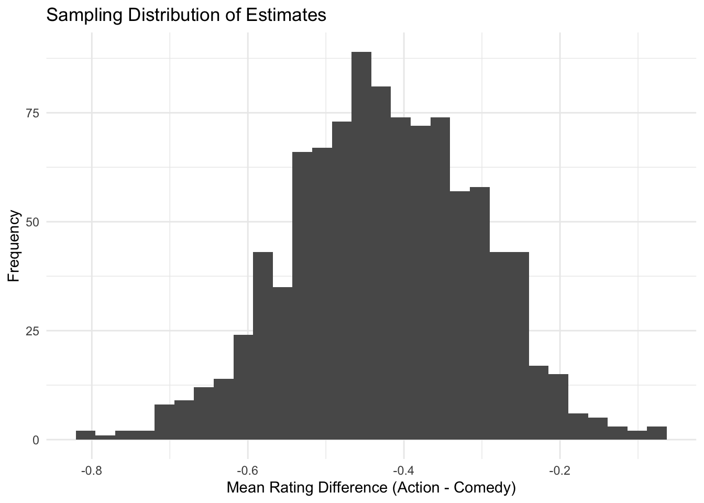
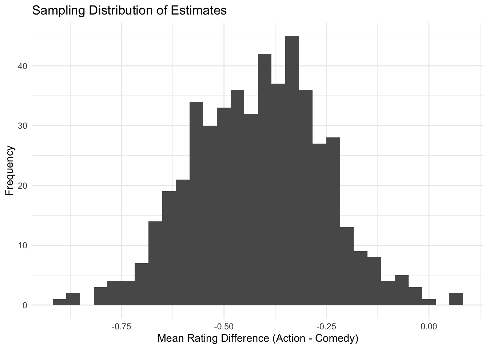
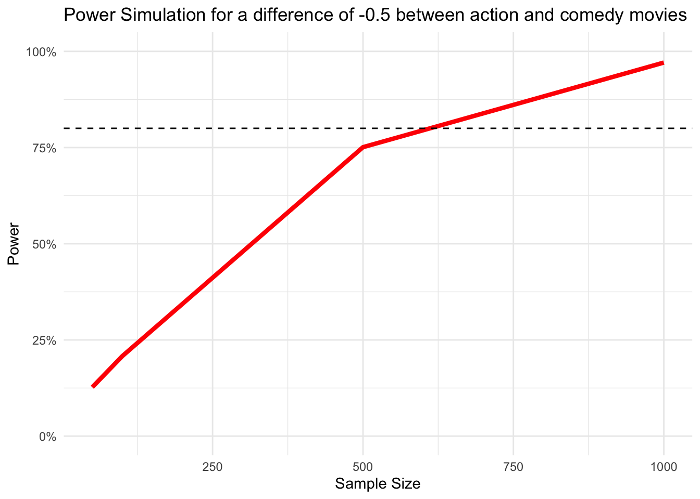

library(tidyverse)
library(patchwork)
library(truncnorm)Power Simulation
Warning
You don’t have much experience with writing your own functions yet. Don’t despair, try to follow along as best as you can.
We start, as always, by loading the libraries we’ll use.
Since we’re running a simulation, we will also set a seed to make it all reproducible.
This guide picks up from where lecture 6 on power analysis ends.
In a power simulation, for a given effect size, we would like to know at which sample size we achieve our desired statistical power.
Imagine we want to know how big a sample we need, to detect a difference of -0.5 between action and comedy movies, assuming we want at least a power of 80%.
Step 1: Generate a single sample and calculate the outcome
# set some sample size
sample_size = 1000
# generate a single random sample
sample <- tibble(
movie_id = 1:sample_size,
genre = sample(c("Comedy", "Action"), size = sample_size, replace = TRUE),
rating = ifelse(
genre == "Comedy",
rtruncnorm(sample_size, a = 1, b = 10, mean = 6.0, sd = 2),
rtruncnorm(sample_size, a = 1, b = 10, mean = 5.5, sd = 2)
)
)head(sample)# A tibble: 6 × 3
movie_id genre rating
<int> <chr> <dbl>
1 1 Comedy 6.15
2 2 Action 6.68
3 3 Comedy 3.63
4 4 Comedy 6.02
5 5 Action 2.66
6 6 Comedy 9.19To be able to use this later, we turn it into a function.
generate_sample <- function(sample_size){
sample <- tibble(
movie_id = 1:sample_size,
genre = sample(c("Comedy", "Action"), size = sample_size, replace = TRUE),
rating = ifelse(
genre == "Comedy",
rtruncnorm(sample_size, a = 1, b = 10, mean = 6.0, sd = 2),
rtruncnorm(sample_size, a = 1, b = 10, mean = 5.5, sd = 2)
)
)
return(sample)
}Now we can call this function.
sample <- generate_sample(sample_size = 1000)
head(sample)# A tibble: 6 × 3
movie_id genre rating
<int> <chr> <dbl>
1 1 Action 6.47
2 2 Action 3.80
3 3 Comedy 3.95
4 4 Comedy 9.39
5 5 Comedy 5.91
6 6 Comedy 6.82Step 2: Get an estimate
estimate <- sample |>
group_by(genre) |>
summarize(avg_rating = mean(rating)) |>
summarise(diff = avg_rating[genre == "Action"] - avg_rating[genre == "Comedy"]) %>%
pull(diff)
estimate[1] -0.5484191Again, let’s put this in a function
generate_estimate <- function(sample){
estimate <- sample |>
group_by(genre) |>
summarize(avg_rating = mean(rating)) |>
summarise(diff = avg_rating[genre == "Action"] - avg_rating[genre == "Comedy"]) %>%
pull(diff)
return(estimate)
}Again, we can now call this function.
generate_estimate(sample = sample)[1] -0.5484191Step 3: Repeat
Let’s say we want to have 1000 samples for our sampling distribution, so we repeat the above process 1000 times.
n_simulations <- 1000
# make an empty vector
estimates <- c()
for (i in 1:n_simulations) {
# draw a sample
sample <- generate_sample(sample_size = 1000)
# get an estimate
estimate <- generate_estimate(sample = sample)
estimates[i] <- estimate
}We can plot the results to see if it worked as we expected.
ggplot(data.frame(estimates), aes(x = estimates)) +
geom_histogram() +
labs(title = "Sampling Distribution of Estimates",
x = "Mean Rating Difference (Action - Comedy)",
y = "Frequency") +
theme_minimal()`stat_bin()` using `bins = 30`. Pick better value with `binwidth`.
Seems good.
Again, let’s put this into a function
generate_samples <- function(n_simulations, sample_size) {
# Make an empty vector
estimates <- numeric(n_simulations)
for (i in 1:n_simulations) {
# Draw a sample with the specified size
sample <- generate_sample(sample_size)
# Get an estimate
estimates[i] <- generate_estimate(sample)
}
return(estimates)
}estimates <- generate_samples(n_simulations = 500, sample_size = 500)ggplot(data.frame(estimates), aes(x = estimates)) +
geom_histogram() +
labs(title = "Sampling Distribution of Estimates",
x = "Mean Rating Difference (Action - Comedy)",
y = "Frequency") +
theme_minimal()`stat_bin()` using `bins = 30`. Pick better value with `binwidth`.
Works fine again.
Step 4: Calculate power
To calculate the power, we first test the statistical significance for each of our 1000 estimates.
To do so, we bring our estimate to the scale of the standard normal distribution and check if it’s smaller than -1.96.
calculate_power <- function(estimates){
# bring on standard normal distribution scale
estimates_standardized <- estimates/sd(estimates)
# get statistical power
power <- data.frame(estimates_standardized) |>
mutate(significant = ifelse(estimates_standardized <= -1.96, TRUE, FALSE)) |>
summarize(share_significant = sum(significant) / n()) |>
pull(share_significant)
return(power)
}calculate_power(estimates = estimates)[1] 0.736Step 5: Bring it all together
We now put all the above functions into a final power_simulation function.
power_simulation <- function(sample_size, n_simulations = 1000) {
# Generate multiple samples and compute estimates
estimates <- generate_samples(n_simulations, sample_size)
# Calculate statistical power
power <- calculate_power(estimates)
# Return results
return(tibble(
sample_size = sample_size,
n_simulations = n_simulations,
estimated_power = power,
mean_effect = mean(estimates),
sd_effect = sd(estimates)
))
}Let’s test this function
# run a power simulation for sample size 1000
power_simulation(sample_size = 1000, n_simulations = 1000)# A tibble: 1 × 5
sample_size n_simulations estimated_power mean_effect sd_effect
<dbl> <dbl> <dbl> <dbl> <dbl>
1 1000 1000 0.935 -0.422 0.121🎉 Seems to have worked just fine.
Step 6: Repeat the whole process
We write a for loop, for different sample sizes we would like to test. Remember that the output of our power_data() function is a data frame, so we initialize an empty data frame where we can store the results of all iterations.
Note that running the code chunk below takes a couple of seconds.
sample_sizes <- c(50, 100, 500, 1000)
# make an empty data frame
power_data <- tibble()
for (i in sample_sizes) {
# run power simulation
power <- power_simulation(sample_size = i, n_simulations = 1000)
power_data <- bind_rows(power_data, power)
}
power_data# A tibble: 4 × 5
sample_size n_simulations estimated_power mean_effect sd_effect
<dbl> <dbl> <dbl> <dbl> <dbl>
1 50 1000 0.127 -0.432 0.518
2 100 1000 0.208 -0.423 0.371
3 500 1000 0.751 -0.436 0.169
4 1000 1000 0.971 -0.431 0.111🎉 Worked!
We can plot the results.
ggplot(power_data,
aes(x = sample_size, y = estimated_power)) +
geom_line(color = 'red', size = 1.5) +
# add a horizontal line at 80%
geom_hline(aes(yintercept = .8), linetype = 'dashed') +
# Prettify!
theme_minimal() +
scale_y_continuous(labels = scales::percent, limits = c(0,1)) +
labs(title = "Power Simulation for a difference of -0.5 between action and comedy movies",
x = 'Sample Size', y = 'Power')Warning: Using `size` aesthetic for lines was deprecated in ggplot2 3.4.0.
ℹ Please use `linewidth` instead.
From the curve, we can read that we reach our desired power level somewhere between a sample size of 500 and 1000, but a lot closer to 500.